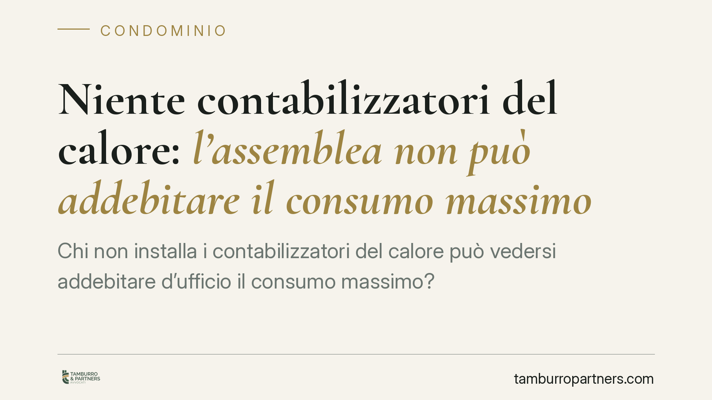

Niente contabilizzatori del calore: l'assemblea non può addebitare il "consumo massimo"
Chi non installa i contabilizzatori del calore può vedersi addebitare d'ufficio il "consumo massimo"? Secondo una recente pronuncia del Tribunale di Milano, no: una simile delibera è nulla, perché priva di fondamento nel D.Lgs. 102/2014. La decisione tocca da vicino i condomìni con riscaldamento centralizzato e i criteri di riparto delle spese di climatizzazione.

Il caso
Alcuni condomini hanno impugnato una delibera assembleare che addebitava alle unità immobiliari prive di contabilizzatori del calore un importo pari al cosiddetto "consumo massimo" presumibile. L'assemblea aveva adottato questo criterio per sanzionare, di fatto, chi non si era adeguato all'obbligo di installazione dei sistemi di misurazione.
Il Tribunale di Milano (sent. n. 4058/2026) ha dichiarato nulla la delibera. La ragione è netta: il criterio del "consumo massimo" non trova alcuna base nella normativa di riferimento, nemmeno quando l'installazione dei contabilizzatori sia tecnicamente impossibile.
*(Nota: gli estremi completi della pronuncia — sezione e pubblicazione ufficiale — sono in corso di verifica; si consiglia il riscontro sulla fonte giurisprudenziale prima di ogni utilizzo in sede contenziosa.)*
Inquadramento normativo
La ripartizione delle spese di riscaldamento negli impianti centralizzati è disciplinata dall'art. 9 del D.Lgs. 102/2014, come modificato dal D.Lgs. 141/2016. La norma impone, dove tecnicamente possibile, l'installazione di sistemi di contabilizzazione individuale del calore.
Il comma 5 prevede che le spese siano suddivise secondo un criterio misto: una quota in funzione dei consumi effettivi (consumo "volontario", cioè quello determinato dalle scelte del singolo) e una quota in funzione delle potenze installate o dei millesimi (consumo "involontario", legato alle dispersioni dell'impianto comune). Il parametro tecnico di riferimento è la norma UNI 10200.
Qui sta il punto spesso trascurato: l'applicazione della UNI 10200 non è incondizionata. Quando la norma tecnica risulta non applicabile — per esempio perché l'edificio presenta caratteristiche che non consentono una ripartizione affidabile, o perché i costi di adeguamento sono sproporzionati rispetto ai risparmi attesi — la ripartizione può avvenire secondo i millesimi di proprietà o altri criteri sostenibili. In nessun caso, però, la legge contempla l'addebito forfettario del "consumo massimo".
Perché la delibera è nulla (e non solo annullabile)
La distinzione è decisiva sul piano pratico. L'art. 1137 c.c. prevede che le delibere annullabili possano essere impugnate entro trenta giorni, decorsi i quali diventano definitive. Le delibere nulle, invece, sono impugnabili senza limiti di tempo, perché il vizio è radicale.
Il Tribunale ha qualificato la delibera come nulla proprio perché il criterio del "consumo massimo" è privo di base normativa: non si tratta di un errore nell'applicazione di un criterio ammesso, ma dell'adozione di un criterio che la legge non prevede. Un condomino può quindi contestarla anche oltre i trenta giorni.
Il nodo dell'impossibilità tecnica
Un aspetto rilevante riguarda chi non ha i contabilizzatori per impossibilità tecnica di installazione, non per inerzia. In questi casi la mancata misurazione non è imputabile al singolo. Addebitargli il consumo massimo significherebbe penalizzarlo per una circostanza oggettiva, in contrasto con la ratio dell'art. 9.
Resta invece ferma la possibilità, per l'assemblea, di applicare i criteri legittimi di riparto — consumo effettivo dove misurabile, millesimi dove la UNI 10200 non è praticabile — senza ricorrere a presunzioni sanzionatorie non previste dalla legge.
Implicazioni pratiche
Per gli amministratori e per i condòmini la pronuncia conferma che le delibere di riparto devono ancorarsi ai criteri legali. Un criterio "inventato" in assemblea, anche se adottato a maggioranza e con intenti di equità, resta esposto a declaratoria di nullità.
Per chi si trova addebitato un importo forfettario, la possibilità di contestazione non si esaurisce nei trenta giorni, data la natura del vizio.
Cosa fare in concreto
- Il condomino può verificare il criterio di riparto indicato nel rendiconto e nel verbale assembleare, controllando che corrisponda ai parametri dell'art. 9 D.Lgs. 102/2014.
- In caso di impossibilità tecnica di installazione, è opportuno documentarla tramite perizia tecnica che attesti l'inapplicabilità o la sproporzione dei costi.
- L'amministratore può far valutare la conformità del regolamento di spesa alla UNI 10200 o, in subordine, al criterio millesimale.
- È utile conservare verbali e delibere relativi all'adozione dei criteri di riparto, utili in sede di eventuale contestazione.
- Prima dell'approvazione del consuntivo, è opportuno sottoporre a verifica la correttezza del metodo di ripartizione adottato.
Disclaimer
Contributo informativo a cura di Tamburro & Partners – Avv. Giuseppe Tamburro. Non costituisce parere legale.
Ogni condominio ha una storia a sé.
Se gestisci un'amministrazione e vuoi un confronto su una specifica questione condominiale, scrivi allo studio. Ti rispondiamo entro un giorno lavorativo.